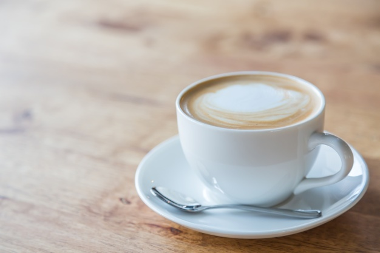
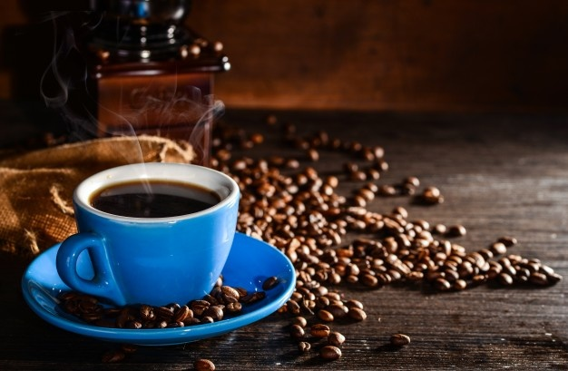
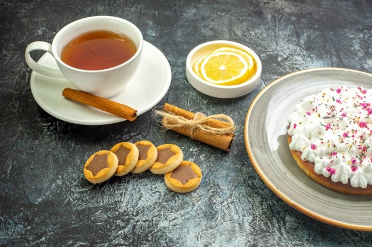
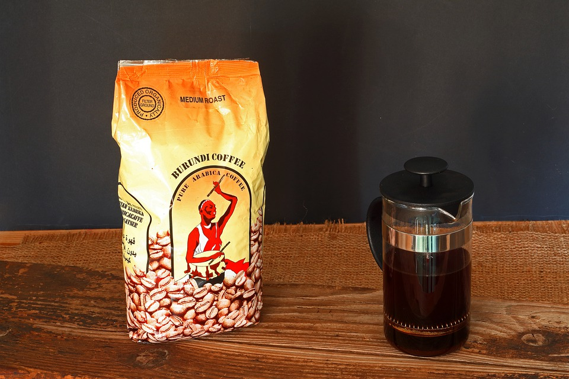

Cafeteria QUERO CAFÉ
| Foto | Descrição | Preço (R$) | Quantidade disponível |
|---|---|---|---|
|  | Trata-se do café filtrado com leite aquecido ou fervido. Também pode apresentar-se como café expresso com leite vaporizado e uma fina camada de espuma de leite. | R$ 5,00 | 20 |
|  | Nada mais é que o dobro de um espresso. Aproximadamente 60 ml de café. | R$ 7,00 | 20 |
|  | Chá em infusão de canela | R$ 6,00 | 40 |
|
Um terço de café expresso, um terço de leite vaporizado e um terço de espuma de leite vaporizado. | R$ 12,00 | 15 |
|  | Pacote de 500g de café arabica moagem media. | R$ 28,00 | 25 |